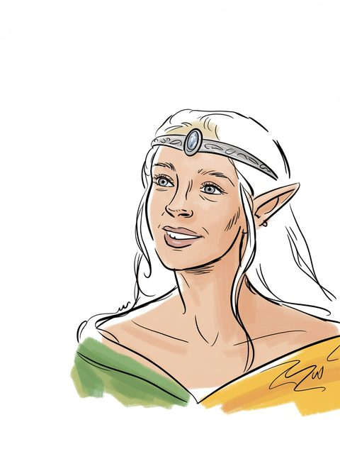

Arwen Undómiel
figure of the legendarium
(T.A. 241–F.o.A. 121 (Cerin Amroth))
Open the full record in the living archive →Part of the Arda Archive — a corpus-first index of Tolkien's legendarium; every fact cited, every silence declared.


of the legendarium
T.A. 241–F.o.A. 121 (Cerin Amroth)a
GENERATED. Ideogram V3, driven by a prompt written in this archive; no illustrator drew it and it must never be presented as though one had. Ruling 3 asks for the hand and this IS the hand -- 'generated' is an answer, 'unknown' would not be.b
“at last Sauron and the power of Mordor was destroyed. He wedded Arwen Undómiel daughter of Elrond and restored the”c
“and Arwen Undómiel. I think the simple ‘rustic’ love of Sam and his Rosie”d
“Arwen Undómiel in the City of the Kings upon the day of Mid-”e
The name stands in 37 cited lines, in 10 of the corpus's 192 texts — most often in The Peoples of Middle Earth (10), The Lord of the Rings (7), The Complete Tolkien Companion (5).f
11 cited lines stand in 2 volumes of the drafts and 15 in 4 of the published books — the published text carries it more often than the drafts did.g
Minas Tirith (1).h
Mordor (1).i
a The text — [I-H]
b The ruling — the owner's ruling of 13 August 2026, on the 552 generated images: 'we are free to use them'. That settles the LICENCE and does not settle the HAND, which is recorded above as what it is. [C]
c The text — The Peoples of Middle Earth · l.6487 [C]
d The text — The Letters of J R R Tolkien Revised and Expanded Ed · l.8727 [C]
e The text — The Lord of the Rings · l.43528 [C]
f Counted — site/arda_apparatus.json [C]
g Counted — site/arda_apparatus.json [C]
h Counted — site/arda_apparatus.json [C]
i Counted — site/arda_apparatus.json [C]
“'Lady Undómiel,' said Aragorn, 'the hour is indeed hard, yet it was made even in that day when we met under the white birches in the garden of Elrond where none now walk. And on the hill of Cerin Amroth when we forsook both the Shadow and the Twilight this doom we accepted… I am the last of the Númenóreans and the latest King of the Elder Days; and to me has been given not only a span thrice that of Men of Middle-earth, but also the grace to go at my will, and give back the gift. Now, therefore, I will sleep. 'I speak no comfort to you, for there is no comfort for such pain within the circles of the world. The uttermost choice is before you: to repent and go to the Havens and bear away into the West the memory of our days together that shall there be evergreen but never more than memory; or else to abide the Doom of Men.' 'Nay, dear lord,' she said, 'that choice is long over. There is now no ship that would bear me hence, and I must indeed abide the Doom of Men, whether I will or I nill: the loss and the silence… For if this is indeed, as the Eldar say, the gift of the One to Men, it is bitter to receive.' 'So it seems,' he said. 'But let us not be overthrown at the final test, who of old renounced the Shadow and the Ring. In sorrow we must go, but not in despair. Behold! we are not bound for ever to the circles of the world, and beyond them is more than memory. Farewell!' 'Estel, Estel!' she cried”j
“227 (I: 239). Arwen ... Undomiel, for she was the Evenstar of her people” — the name is near this line and the archive does not assert that it is this record.k
in Gondor; child of Elrond, Celebrían; wedded to Aragorn II Elessar; father or mother of Eldarion, ⟨daughters — unnamed⟩; T.A. 241–F.o.A. 121 (Cerin Amroth).l
Elrond (6), Elladan (3), Elrohir (3), Irmo (Lórien) (3) — a shared line is a fact about the line, not a claim that the two met.m
a marginal hand recording a change to this record — searched over 59 verified notes in site/arda_hands.json, and nothing was found.n
recorded by-names for this figure — searched over 47 worked sets in site/arda_epithets.json, and nothing was found.o
j The passage — The Lord of the Rings · l.47661 [C]
k The line — The Lord of the Rings a Reader's Companion · l.11845 [EXT]
l The table — App A I(v) [C]
m Counted — site/arda_apparatus.json [C]
n The search — site/arda_apparatus.json [C]
o The search — site/arda_apparatus.json [C]
(T.A. 241–F.o.A. 121 (Cerin Amroth))
Open the full record in the living archive →